25+ Slow Cooker Christmas Dinner Ideas
📌 Save to Pinterest
Christmas dinner does not have to mean a day at the stove. This roundup gathers twenty-five slow cooker Christmas dinner ideas — festive mains from lasagna and curry to chili and carnitas, all made hands-off in the slow cooker. Pick a main, set it in the morning, and spend Christmas Day with your people instead of your oven.
How to plan a slow cooker Christmas dinner
Choose one main per table, not three — a slow cooker makes one generous pot, and that is plenty with sides. Pasta bakes, chilis and curries feed a crowd from a single pot, while braised meats like carnitas and beef tips stretch even further. If your slow cooker is small, cook the main in the morning and hold it warm while a quick side finishes. Serve family-style, straight from the pot, and let everyone take seconds.
Good to know: Everything is written in American English, and measurements use US customary units — cups, tablespoons, and Fahrenheit — for cooks in the United States. Always follow safe food-handling guidance, and check labels for allergens when cooking for others.
Food safety: cook poultry to 165°F (74°C), ground meat and sausage to 160°F (71°C), and whole cuts of beef and pork to 145°F (63°C) with a 3-minute rest. Never cook frozen meat in a slow cooker — thaw it first — and keep the lid on while cooking so the slow cooker stays hot enough. Refrigerate leftovers promptly. Check with a food thermometer — see the USDA chart at foodsafety.gov.
Festive mains
Cranberry chicken, beef tips, pork chops, cabbage rolls and lasagna — mains worthy of Christmas Day.
1. Slow Cooker Chicken with Cranberry Orange Sauce
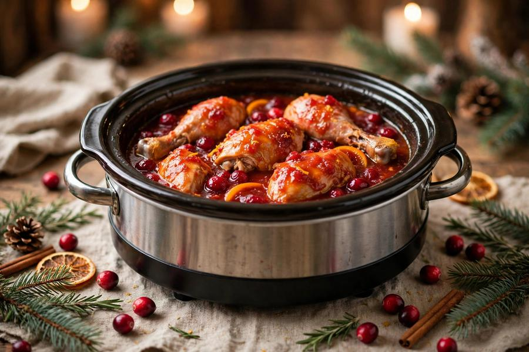
Festive chicken in a bright sauce
Ingredients
- 4 chicken breasts
- 1 can (14 oz) cranberry sauce
- 1/2 cup orange juice
- zest of 1 orange
- 2 tbsp brown sugar
- 1 tsp rosemary
Directions
- Mix cranberry sauce, orange juice, zest, brown sugar and rosemary.
- Add chicken and sauce to a slow cooker.
- Cook on low 5 hours until tender.
- Serve with the sauce spooned over.
Food safety: cook the chicken to 165°F (74°C) — check with a food thermometer.
2. Slow Cooker Beef Tips with Mushroom Gravy

Tender beef in rich gravy
Ingredients
- 2 lbs beef stew meat
- 8 oz mushrooms
- 1 onion
- 2 cups beef broth
- 2 tbsp flour
- 1 tbsp Worcestershire sauce
- 1 tsp thyme
Directions
- Brown the beef in a skillet.
- Add beef, mushrooms, onion, broth, flour, Worcestershire and thyme to a slow cooker.
- Cook on low 6 hours until tender.
- Serve over mashed potatoes or noodles.
Food safety: cook the beef to 145°F (63°C).
3. Slow Cooker Honey Mustard Pork Chops
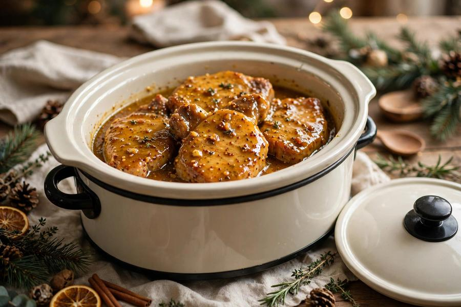
Sweet, tangy pork chops
Ingredients
- 4 pork chops
- 1/2 cup honey
- 1/4 cup Dijon mustard
- 2 garlic cloves
- 1 tbsp apple cider vinegar
- 1 tsp rosemary
Directions
- Whisk honey, mustard, garlic, vinegar and rosemary.
- Add chops and sauce to a slow cooker.
- Cook on low 4 hours until tender.
- Serve with the sauce spooned over.
Food safety: cook the pork to 145°F (63°C) and let it rest for 3 minutes before serving.
4. Slow Cooker Stuffed Cabbage Rolls

Savory beef and rice in cabbage
Ingredients
- 1 head cabbage
- 1 lb ground beef
- 1 cup cooked rice
- 1 onion
- 1 egg
- 1 can (28 oz) tomato sauce
- 1 tbsp brown sugar
Directions
- Blanch the cabbage leaves for 3 minutes.
- Mix beef, rice, onion and egg; roll into the leaves.
- Add tomato sauce and brown sugar to a slow cooker; nestle in the rolls.
- Cook on low 6 hours.
- Serve with the sauce.
Food safety: cook the ground beef to 160°F (71°C) — check with a food thermometer.
5. Slow Cooker Lasagna
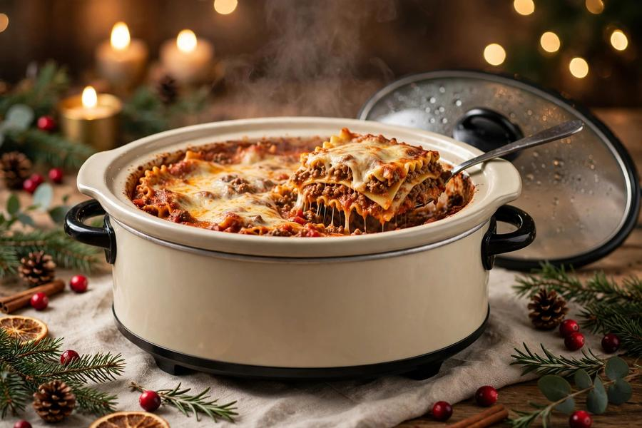
Layered, cheesy, no-boil lasagna
Ingredients
- 1 lb Italian sausage
- 1 jar (24 oz) marinara sauce
- 9 no-boil lasagna noodles
- 15 oz ricotta
- 2 cups shredded mozzarella
- 1/2 cup Parmesan
- 1 egg
Directions
- Brown the sausage and drain.
- Mix ricotta, Parmesan and egg.
- Layer sauce, noodles, sausage, ricotta and mozzarella in a slow cooker.
- Cook on low 4 hours until the noodles are tender.
- Rest 10 minutes before serving.
Food safety: cook the sausage to 160°F (71°C) — check with a food thermometer.
Pasta, chili & curry
Alfredo, ragu, turkey chili, white chicken chili and vegetable curry — one-pot comfort for a cold night.
6. Slow Cooker Chicken Alfredo

Creamy Alfredo over tender chicken
Ingredients
- 2 lbs chicken breasts
- 2 cups heavy cream
- 1 cup Parmesan
- 4 garlic cloves
- 2 tbsp butter
- 12 oz fettuccine
- chopped parsley
Directions
- Add chicken, cream, Parmesan, garlic and butter to a slow cooker.
- Cook on low 5 hours.
- Shred the chicken and stir it back in.
- Serve over cooked fettuccine with parsley.
Food safety: cook the chicken to 165°F (74°C) — check with a food thermometer.
7. Slow Cooker Beef Ragu with Pappardelle

Slow-braised beef in tomato sauce
Ingredients
- 2 lbs ground beef
- 1 can (28 oz) crushed tomatoes
- 1 onion
- 4 garlic cloves
- 2 tbsp tomato paste
- 1 tsp oregano
- 12 oz pappardelle
- Parmesan
Directions
- Brown the beef with onion and garlic.
- Add beef, tomatoes, tomato paste and oregano to a slow cooker.
- Cook on low 6 hours.
- Serve over pappardelle with Parmesan.
Food safety: cook the ground beef to 160°F (71°C) — check with a food thermometer.
8. Slow Cooker Turkey Chili
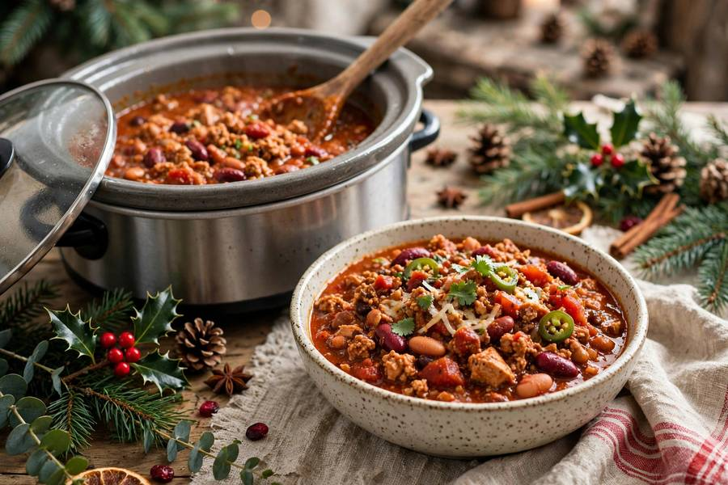
Hearty chili for a cold night
Ingredients
- 2 lbs ground turkey
- 1 can (28 oz) diced tomatoes
- 1 can (15 oz) kidney beans
- 1 can (15 oz) black beans
- 1 onion
- 2 tbsp chili powder
- 1 tsp cumin
- sour cream
Directions
- Brown the turkey with onion.
- Add turkey, tomatoes, beans, chili powder and cumin to a slow cooker.
- Cook on low 6 hours.
- Serve with sour cream.
Food safety: cook the ground turkey to 165°F (74°C) — check with a food thermometer.
9. Slow Cooker White Chicken Chili

Creamy, mild and warming
Ingredients
- 2 lbs chicken breasts
- 2 cans (15 oz) white beans
- 1 can (4 oz) green chiles
- 1 onion
- 4 cups chicken broth
- 1 tsp cumin
- 1/2 cup sour cream
- shredded cheese
Directions
- Add chicken, beans, chiles, onion, broth and cumin to a slow cooker.
- Cook on low 6 hours.
- Shred the chicken and stir in the sour cream.
- Serve with shredded cheese.
Food safety: cook the chicken to 165°F (74°C) — check with a food thermometer.
10. Slow Cooker Vegetable Curry
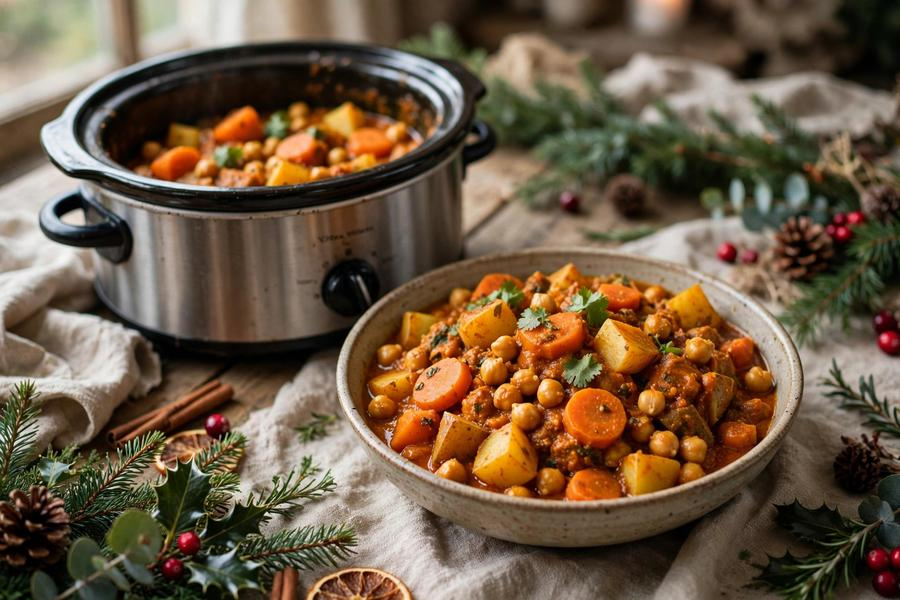
Spiced vegetables in coconut milk
Ingredients
- 2 sweet potatoes
- 1 can (15 oz) chickpeas
- 1 can (14 oz) coconut milk
- 2 tbsp curry powder
- 1 onion
- 2 cups spinach
- 1 tbsp ginger
- rice for serving
Directions
- Peel and cube the sweet potatoes.
- Add sweet potatoes, chickpeas, coconut milk, curry powder, onion and ginger to a slow cooker.
- Cook on low 5 hours.
- Stir in the spinach and serve over rice.

Curry, teriyaki & barbecue
Coconut curry, beef and broccoli, teriyaki chicken, orange chicken and pulled barbecue chicken.
11. Slow Cooker Coconut Curry Chicken
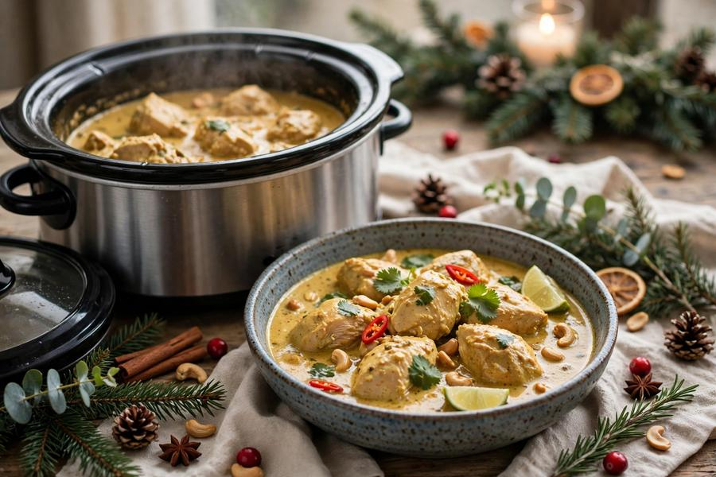
Creamy curry, gentle heat
Ingredients
- 2 lbs chicken thighs
- 1 can (14 oz) coconut milk
- 2 tbsp red curry paste
- 1 onion
- 1 bell pepper
- 1 tbsp ginger
- rice for serving
Directions
- Whisk coconut milk with curry paste and ginger.
- Add chicken, onion and pepper to a slow cooker; pour the sauce over.
- Cook on low 5 hours until tender.
- Serve over rice.
Food safety: cook the chicken to 165°F (74°C) — check with a food thermometer.
12. Slow Cooker Beef and Broccoli
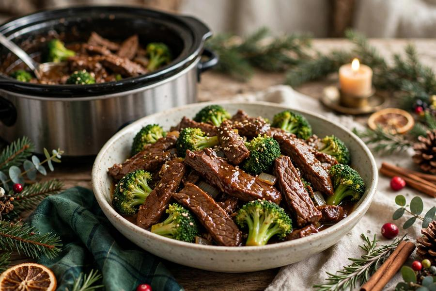
Tender beef in savory sauce
Ingredients
- 2 lbs beef stew meat
- 4 cups broccoli florets
- 1/2 cup soy sauce
- 1/4 cup brown sugar
- 3 garlic cloves
- 1 tbsp sesame oil
- 1 tbsp cornstarch
- rice for serving
Directions
- Add beef, soy sauce, brown sugar, garlic and sesame oil to a slow cooker.
- Cook on low 5 hours.
- Stir in the cornstarch mixed with water and the broccoli; cook 30 more minutes.
- Serve over rice.
Food safety: cook the beef to 145°F (63°C).
13. Slow Cooker Teriyaki Chicken
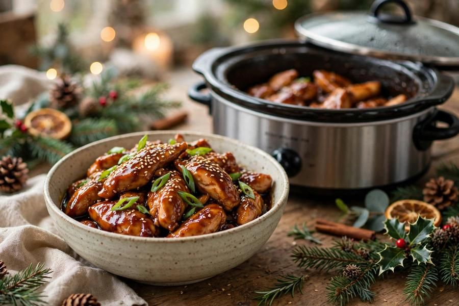
Sweet-savory chicken, hands-off
Ingredients
- 2 lbs chicken thighs
- 1/2 cup teriyaki sauce
- 1/4 cup brown sugar
- 2 garlic cloves
- 1 tbsp rice vinegar
- 1 tsp sesame seeds
- rice for serving
Directions
- Whisk teriyaki sauce, brown sugar, garlic and vinegar.
- Add chicken and sauce to a slow cooker.
- Cook on low 5 hours until tender.
- Shred or slice; sprinkle with sesame seeds.
- Serve over rice.
Food safety: cook the chicken to 165°F (74°C) — check with a food thermometer.
14. Slow Cooker Orange Chicken
Sticky, citrusy chicken
Ingredients
- 2 lbs chicken thighs
- 1 cup orange juice
- 1/2 cup barbecue sauce
- 1/4 cup brown sugar
- 2 tbsp soy sauce
- zest of 1 orange
- rice for serving
Directions
- Whisk orange juice, barbecue sauce, brown sugar, soy sauce and zest.
- Add chicken and sauce to a slow cooker.
- Cook on low 5 hours until tender.
- Serve over rice with the sauce spooned over.
Food safety: cook the chicken to 165°F (74°C) — check with a food thermometer.
15. Slow Cooker BBQ Pulled Chicken

Smoky pulled chicken for sandwiches
Ingredients
- 2 lbs chicken breasts
- 1 1/2 cups barbecue sauce
- 1 tbsp brown sugar
- 1 tsp smoked paprika
- 1 tbsp apple cider vinegar
- buns for serving
Directions
- Add chicken, barbecue sauce, brown sugar, paprika and vinegar to a slow cooker.
- Cook on low 5 hours.
- Shred the chicken and stir it back into the sauce.
- Serve on buns.
Food safety: cook the chicken to 165°F (74°C) — check with a food thermometer.
Carnitas, enchiladas & bakes
Carnitas, enchiladas, stuffed peppers, eggplant Parmesan and ratatouille — slow-cooked comfort from every corner.
16. Slow Cooker Carnitas

Crispy-edged pulled pork
Ingredients
- 1 pork shoulder (4 lbs)
- 1 onion
- 4 garlic cloves
- 1 orange
- 1 tsp cumin
- 1 tsp oregano
- tortillas for serving
Directions
- Rub the pork with cumin, oregano, salt and pepper.
- Add onion, garlic and orange halves to a slow cooker; set the pork on top.
- Cook on low 8 hours until it shreds easily.
- Shred and crisp under the broiler for 5 minutes.
- Serve in tortillas.
Food safety: cook the pork to 145°F (63°C) — carnitas are done when tender.
17. Slow Cooker Chicken Enchiladas
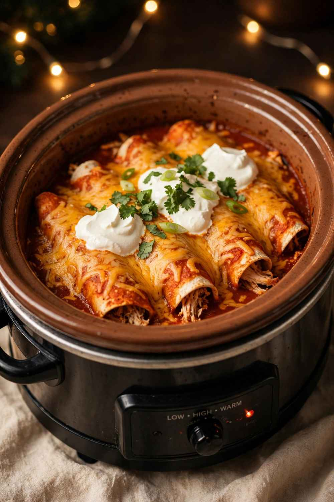
Cheesy enchiladas, no oven
Ingredients
- 2 lbs chicken breasts
- 1 can (19 oz) enchilada sauce
- 8 flour tortillas
- 2 cups shredded cheddar
- 1 can (4 oz) green chiles
- sour cream
Directions
- Add chicken and half the enchilada sauce to a slow cooker.
- Cook on low 5 hours; shred the chicken.
- Roll chicken and cheese into tortillas; place in the slow cooker with the remaining sauce and cheese on top.
- Cook on low 1 more hour.
- Serve with sour cream.
Food safety: cook the chicken to 165°F (74°C) — check with a food thermometer.
18. Slow Cooker Stuffed Peppers

Beef and rice in sweet peppers
Ingredients
- 6 bell peppers
- 1 lb ground beef
- 1 cup cooked rice
- 1 can (14 oz) diced tomatoes
- 1 onion
- 1 cup shredded cheddar
- 1 tsp Italian seasoning
Directions
- Cut the tops off the peppers and remove the seeds.
- Mix beef, rice, tomatoes, onion and seasoning; fill the peppers.
- Set them in a slow cooker and top with cheddar.
- Cook on low 5 hours until the beef is cooked through.
Food safety: cook the ground beef to 160°F (71°C) — check with a food thermometer.
19. Slow Cooker Eggplant Parmesan

Layers of eggplant, sauce and cheese
Ingredients
- 2 eggplants
- 1 jar (24 oz) marinara sauce
- 2 cups shredded mozzarella
- 1/2 cup Parmesan
- 1 cup breadcrumbs
- 2 eggs
- 1 tsp Italian seasoning
Directions
- Slice the eggplant; dip in beaten egg, then breadcrumbs.
- Layer eggplant, sauce and cheeses in a slow cooker.
- Cook on low 4 hours until tender and bubbly.
- Sprinkle with Italian seasoning.
20. Slow Cooker Ratatouille
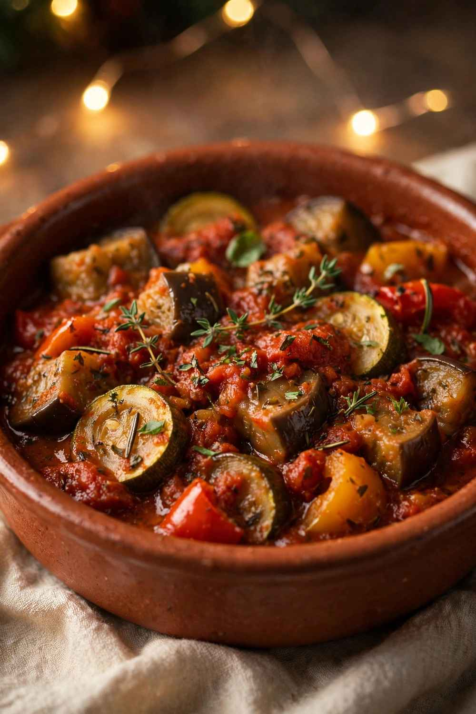
Provençal vegetables, slow and soft
Ingredients
- 1 eggplant
- 2 zucchini
- 1 bell pepper
- 1 can (28 oz) crushed tomatoes
- 1 onion
- 4 garlic cloves
- 2 tbsp olive oil
- 1 tbsp herbs de Provence
Directions
- Chop all the vegetables and add them to a slow cooker with tomatoes, garlic, oil and herbs.
- Cook on low 5 hours until soft.
- Season and serve as a side or over rice.
One-pot comfort & classics
Risotto, baked beans, cabbage and sausage, sausage and peppers, and a classic meatloaf — the cozy finish.
21. Slow Cooker Mushroom Risotto

Creamy risotto, no stirring
Ingredients
- 2 cups arborio rice
- 8 oz mushrooms
- 1 onion
- 4 1/2 cups vegetable broth
- 1/2 cup Parmesan
- 2 tbsp butter
- 1 tbsp lemon juice
- chopped parsley
Directions
- Sauté the mushrooms and onion in butter.
- Add rice, mushrooms, onion and broth to a slow cooker.
- Cook on low 2 hours, stirring once.
- Stir in Parmesan and lemon juice; top with parsley.
22. Slow Cooker Baked Beans with Brown Sugar
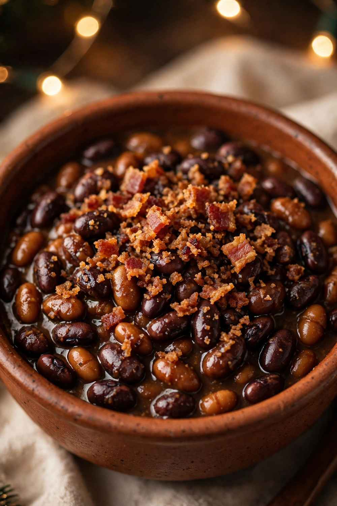
Sweet, smoky beans
Ingredients
- 4 cans (15 oz) navy beans
- 8 slices bacon
- 1/2 cup brown sugar
- 1/4 cup molasses
- 2 tbsp mustard
- 1 onion
Directions
- Cook the bacon until crisp; crumble and set aside.
- Add beans, brown sugar, molasses, mustard, onion and half the bacon to a slow cooker.
- Cook on low 4 hours.
- Top with the remaining bacon.
Food safety: cook the bacon until crisp.
23. Slow Cooker Cabbage and Sausage
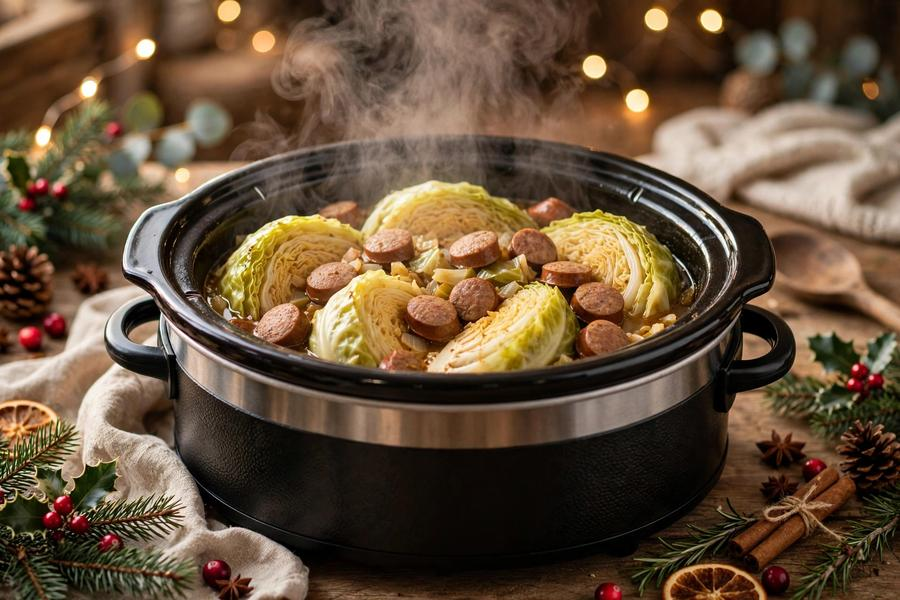
Hearty, one-pot comfort
Ingredients
- 1 lb smoked sausage
- 1 head cabbage
- 2 potatoes
- 1 onion
- 2 cups chicken broth
- 1 tsp caraway seeds
- salt and pepper
Directions
- Slice the sausage and chop the cabbage, potatoes and onion.
- Add everything to a slow cooker with broth and caraway seeds.
- Cook on low 6 hours until the cabbage is tender.
- Serve warm.
Food safety: heat the sausage until steaming hot throughout.
24. Slow Cooker Sausage and Peppers

Classic peppers and sausage
Ingredients
- 2 lbs Italian sausage
- 3 bell peppers
- 1 onion
- 1 can (14 oz) diced tomatoes
- 2 garlic cloves
- 1 tsp Italian seasoning
- rolls for serving
Directions
- Brown the sausage in a skillet.
- Add sausage, peppers, onion, tomatoes, garlic and seasoning to a slow cooker.
- Cook on low 5 hours.
- Serve in rolls or over pasta.
Food safety: cook the sausage to 160°F (71°C) — check with a food thermometer.
25. Slow Cooker Meatloaf with Brown Sugar Glaze
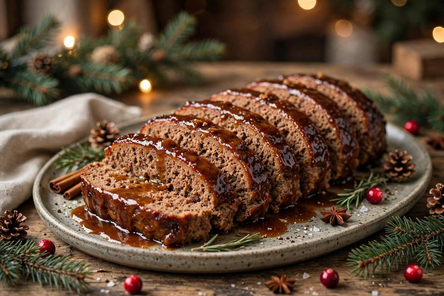
Classic meatloaf, slow-cooked
Ingredients
- 2 lbs ground beef
- 1 cup breadcrumbs
- 2 eggs
- 1 onion
- 1/2 cup ketchup
- 1/4 cup brown sugar
- 1 tbsp mustard
- 1 tsp garlic powder
Directions
- Mix beef, breadcrumbs, eggs, onion and garlic powder; shape into a loaf.
- Place in a slow cooker lined with foil.
- Mix ketchup, brown sugar and mustard; spread over the loaf.
- Cook on low 5 hours.
- Rest 10 minutes before slicing.
Food safety: cook the meatloaf to 160°F (71°C) — check with a food thermometer.
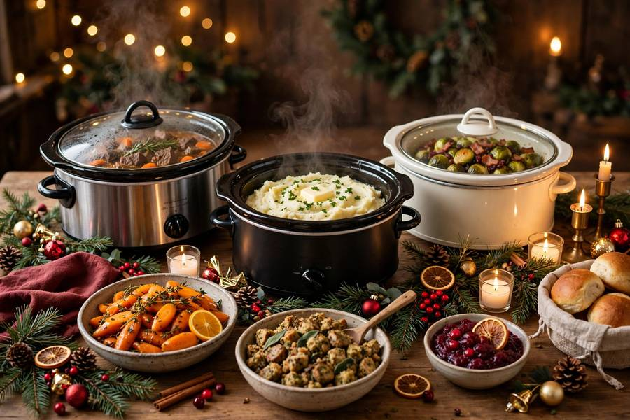
Make-ahead & serving tips
Brown meats and bloom spices before they go into the slow cooker — those few minutes build the flavor the long cook cannot. Keep the lid on while cooking so the pot stays hot enough, and resist stirring until the last hour. Most of these mains hold on warm for an hour or two, so dinner waits for your guests. Leftovers keep covered in the fridge for up to 3 days — reheat gently and add a splash of broth to sauces that thickened overnight.
Related articles
More roundups from the same table:
- 20+ New Year's Eve Dinner Ideas for Family and Friends — festive mains, from roast beef and salmon to pasta and slow cooker favorites.
- 25+ Christmas Side Dishes for Your Holiday Table — roasted vegetables, creamy potatoes, stuffing and cranberry sauce.
- 35+ Easy Christmas Appetizers for a Crowd — dips, bites, cheese boards and warm starters for your holiday party.
- 25+ Christmas Pie Recipes for a Sweet Holiday Table — classic apple, pumpkin and pecan pies plus festive tarts and hand pies for Christmas Day.
Keep exploring
- Browse the Lunch & Dinner roundups — mains and sides for midday and evening tables.
- Browse all six categories — breakfast, lunch and dinner, desserts, air fryer, healthy recipes, and appetizers.
- More about the kitchen — what The Tasty Recipe Co is and how it works.
About The Tasty Recipe Co: Learn how we research, organize and review our food collections — see our About Us and Editorial Policy pages.
Recipe results can vary with ingredients, equipment, and technique. See our Disclaimer for food-safety and allergy notes.